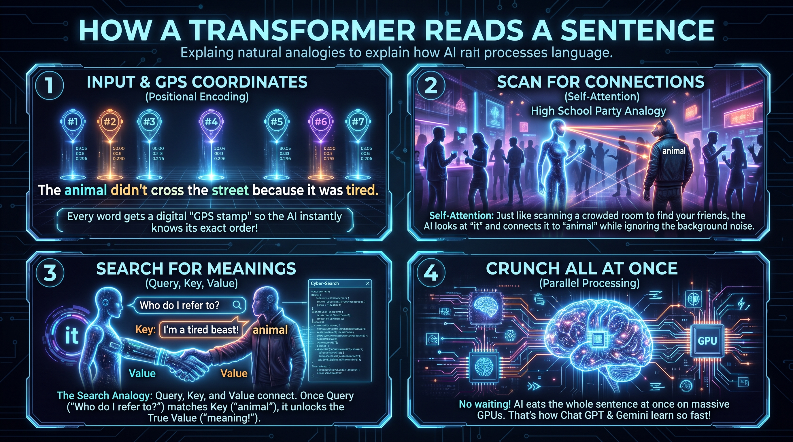

Intro To Artificial Intelligence for Software Development
These eight slides are in order. Start with the birth of the field. End with how a transformer reads a sentence.
- The Birth of AI
- The Hierarchy of Human Expertise
- Flip the Pyramid of Work
- Use AI to Make You Better
- How Do They Work?
- How They Think
- Machine Learning Statistical Methods
- How a Transformer Reads a Sentence
1. The Birth of AI

2. The Hierarchy of Human Expertise

3. Flip the Pyramid of Work

4. Use AI to Make You Better

5. How Do They Work?

6. How They Think

7. Machine Learning Statistical Methods

8. How a Transformer Reads a Sentence

© 2026 Bulldog Ventures Inc. All rights reserved.